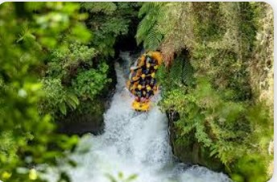

History
Wild Adventure began as a small passion project in the early 2000s, founded by a group of outdoor
enthusiasts who
believed that the best way to experience nature was through the power and thrill of white-water. What
started with just
a few rafts and weekend trips along local rivers soon grew into a trusted rafting company known for
safety, adventure,
and unforgettable experiences.

Over the years, Wild Adventure expanded its operations, exploring new river routes, training certified
guides, and
developing a strong reputation for professionalism and environmental responsibility. From hosting
first-time rafters to
guiding seasoned adventurers through challenging rapids, the company has built its legacy on courage,
teamwork, and
respect for nature.